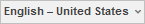
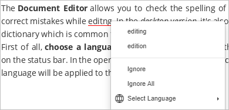

Provera pravopisa
Document Editor omogućava proveru pravopisa teksta na određenom jeziku i ispravljanje grešaka tokom uređivanja. U desktop verziji moguće je i dodavati reči u prilagođeni rečnik koji se koristi u sva tri editora.
Počevši od verzije 6.3, ONLYOFFICE editori podržavaju SharedWorker interfejs za glatkiji rad bez značajne potrošnje memorije. Ako vaš pregledač ne podržava SharedWorker, biće aktivan samo Worker. Više informacija o SharedWorker-u možete pronaći u ovom članku.
Prvo, izaberite jezik za dokument. Kliknite na ikonu Postavi jezik dokumenta na statusnoj traci. U otvorenom prozoru izaberite željeni jezik i kliknite OK. Izabrani jezik će se primeniti na ceo dokument. Kasnije će se prikazivati kao nedavno korišćen jezik i biće dostupan za brzi pristup u istom meniju. U desktop verziji, jezici instalirani sa vašim operativnim sistemom pojavljuju se na vrhu liste jezika pravopisnog proverivača.

Da biste izabrali drugi jezik za neki deo dokumenta, označite željeni tekst mišem i koristite meni

na statusnoj traci.Da biste uključili opciju provere pravopisa, možete:
- kliknuti na ikonu Provera pravopisa na statusnoj traci, ili
- otvoriti karticu Fajl u gornjoj alatnoj traci, izabrati Napredna podešavanja, označiti opciju Uključi proveru pravopisa i kliknuti Primeni.
Sve pogrešno napisane reči biće podvučene crvenom linijom.
Desni klik na potrebnu reč aktivira meni u kojem možete:
- izabrati neku od predloženih reči ispravno napisanu da zamenite pogrešno napisanu. Ako postoji previše varijanti, u meniju se pojavljuje opcija Više varijanti...,
- koristiti opciju Ignoriši da preskočite samo tu reč i uklonite podvlačenje, ili Ignoriši sve da preskočite sve iste reči u tekstu,
- ako trenutna reč nije u rečniku, možete je dodati u prilagođeni rečnik. Ta reč više neće biti tretirana kao greška. Ova opcija je dostupna u desktop verziji,
- izabrati drugi jezik za ovu reč.

Da biste isključili opciju provere pravopisa, možete:
- kliknuti na ikonu Provera pravopisa na statusnoj traci, ili
- otvoriti karticu Fajl u gornjoj alatnoj traci, izabrati Napredna podešavanja, opozvati izbor opcije Uključi proveru pravopisa i kliknuti Primeni.